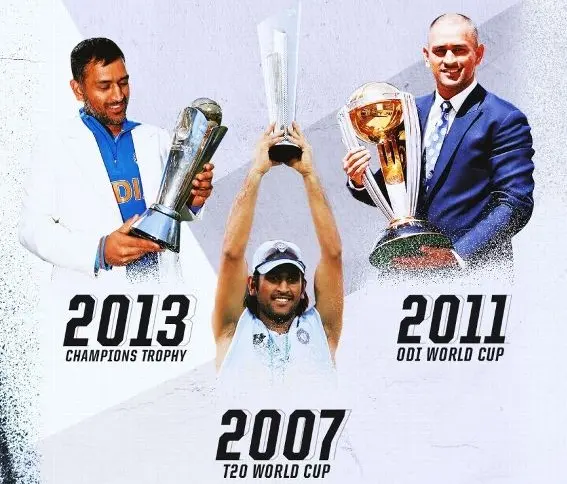
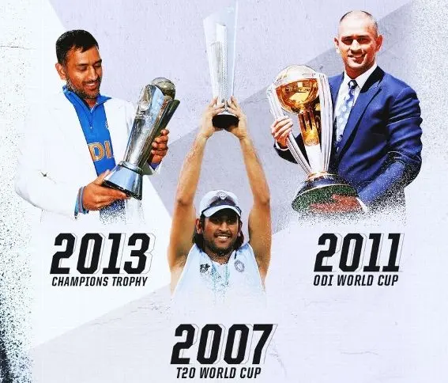

About MS Dhoni
Mahendra Singh Dhoni, commonly known as MS Dhoni, is an Indian cricketer and the former captain of the Indian national team. He is widely regarded as one of the greatest cricket captains and wicket-keeper batsmen of all time. Known for his calm demeanor, tactical acumen, and exceptional leadership, Dhoni has led India to numerous victories, including the ICC T20 World Cup in 2007 and the ICC Cricket World Cup in 2011.
Admirable Qualities
- Leadership: Exceptional ability to lead and inspire his team.
- Calmness: Renowned for his calm and composed demeanor under pressure.
- Strategic Thinking: Tactical genius with an excellent understanding of the game.
- Resilience: Ability to bounce back from setbacks and lead by example.
Gallery

 
